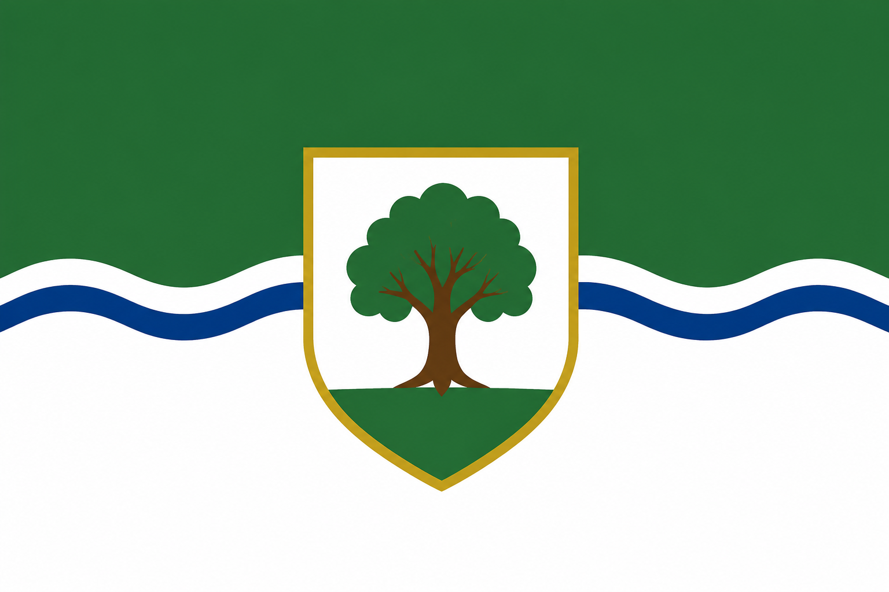

About Naturalej
The Royal Principality of Naturalej, commonly known as Naturalej, is a micronation with designated Novas located in Poland and the United States.
Naturalej is organized as a Constitutional Democratic Principality and is headed by Prince Oliver Komasara.
The designated capital of Naturalej is Komorów, Poland. The official languages are Polish and English.
Government of Naturalej
The Royal Principality of Naturalej operates as a Constitutional Democratic Principality.
Prince of Naturalej
The Prince is the head of state of the Royal Principality.
The position is held by Prince Oliver Komasara, founder of Naturalej.
Grand Council
The Grand Council may propose and debate legislation and participate in decisions concerning the administration and development of Naturalej.
Council of Elders
The Council of Elders provides advice, guidance, and deliberation within the governmental structure of the Principality.
Legislation does not become official law of Naturalej until it is signed by the Prince.
Novas of Naturalej
The first-level administrative divisions of Naturalej are known as Novas. Naturalej currently consists of four Novas located across Poland and the United States.

Map of the Novas of the Royal Principality of Naturalej

Nova Komorowa
Location:
Komorów, 28-133, Poland
Nova Komorowa contains Komorów, the designated capital of the Royal Principality of Naturalej.
Its official flag uses green and white colors with strands of wheat representing nature, peace, and its connection to Polish farmers.
A golden crown represents the Nova's status as the capital Nova and its special connection to the Crown.

Nova Busko-Zdroja
Location:
Busko-Zdrój, 28-100, Poland
Nova Busko-Zdroja reflects its Polish cultural identity and the area's association with mineral and healing waters.
Its red and white colors represent its connection to Poland and the Polish flag.
The golden water fountain represents Busko-Zdrój's culture and its famous mineral and healing waters.

Nova Mount Prospecta
Location:
Mount Prospect, Illinois 60056, United States
Nova Mount Prospecta is the Nova where the Prince of Naturalej is most often present.
Its blue, white, and green colors represent community, peace, and nature.
The star on the flag represents the presence of the Prince and Mount Prospecta's special role within the Principality.

Nova Glenova
Location:
Glenview, Illinois 60025, United States
Nova Glenova emphasizes nature, greenery, growth, peace, and harmony.
Its green and white colors represent nature, peace, and harmony.
The tree represents Glenova's natural environment, greenery, growth, and the importance of preserving nature.
National Symbols

The Royal Flag of Naturalej
The Royal Flag of Naturalej features a light green background with a red apple at its center containing a white heart.
The apple represents nature and growth, while the white heart represents a clear heart, unity, and love of nature.

Coat of Arms
The Coat of Arms of the Royal Principality of Naturalej centers on the red apple and white heart.
The crown represents the Principality and the Crown, while the Polish white eagle and American bald eagle represent Naturalej's connections to Poland and the United States.
Natural imagery represents nature, growth, peace, and the lands associated with Naturalej.
National Motto
"United by Nature, Towards a Brighter Future."
National Anthem
The national anthem of the Royal Principality of Naturalej is United by Nature.
NRM Currency
The official micronational currency of the Royal Principality of Naturalej is the NRM.
The NRM uses the currency symbol ₦, representing the letter N with a horizontal line through its center. The symbol is placed before the monetary value.
The current banknote series consists of ₦10, ₦25, ₦50, and ₦100.

Official ₦10 NRM banknote of the Royal Principality of Naturalej.

Official ₦25 NRM banknote of the Royal Principality of Naturalej.

Official ₦50 NRM banknote of the Royal Principality of Naturalej.

Official ₦100 NRM banknote of the Royal Principality of Naturalej.
The banknotes use a light green background reflecting The Royal Flag of Naturalej.
The designs feature the red apple with a white heart, one of the principal symbols of Naturalej, together with a portrait of Prince Oliver, denomination markings, NRM markings, and the signature of Oliver Komasara.
History of Naturalej
The ideas, symbols, institutions, and governmental structure that developed into Naturalej began before the establishment of its present constitutional system.
An earlier constitutional document was created on 20 July 2025 during the early development of Naturalej.
During 2026, Naturalej underwent further development. Its governmental structure, Novas, national symbols, NRM currency, and constitutional system were developed in preparation for the establishment of the Principality.
The present Royal Principality of Naturalej is planned to be formally established on 5 September 2026, when its present Constitution is scheduled to enter into force.
Constitution of Naturalej
The Constitution of Naturalej establishes the structure and principles of the Royal Principality.
It establishes the Crown, the Prince, the Grand Council, the Council of Elders, rights and freedoms, the Novas, citizenship, national symbols, finance, emergencies, succession, and constitutional amendments.
The Constitution is intended to serve as the highest internal law of the Royal Principality of Naturalej.
Official Information
Royal Principality of Naturalej
Naturalej
Komorów, Poland
Prince Oliver Komasara
Constitutional Democratic Principality
Grand Council and Council of Elders
Polish and English
NRM (₦)
Naturalejan
United by Nature
United by Nature, Towards a Brighter Future.
4